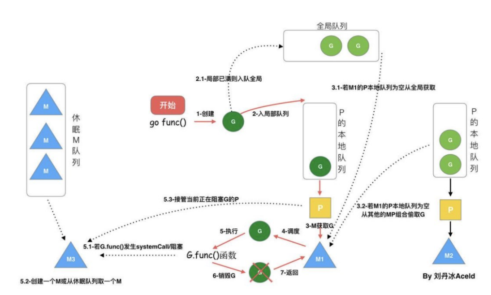

G
Goroutine
M
Machine，是指操作系统线程（OS thread）
P
Processor，是指逻辑处理器
流程
1. 每个 P 有个局部队列，局部队列保存待执行的 goroutine（流程 2），当 M 绑定的 P 的的局部队列已经满了之后就会把 goroutine 放到全局队列（流 程 2-1）
2. 每个 P 和一个 M 绑定，M 是真正的执行 P 中 goroutine 的实体（流程 3）， M 从绑定的 P 中的局部队列获取 G 来执行
3. 当 M 绑定的 P 的局部队列为空时，M 会从全局队列获取到本地队列来执行 G （流程 3.1），当从全局队列中没有获取到可执行的 G 时候，M 会从其他 P 的局部队列中偷取 G 来执行（流程 3.2），这种从其他 P 偷的方式称为 work stealing
4. 当 G 因系统调用（syscall）阻塞时会阻塞 M，此时 P 会和 M 解绑即 hand off，并寻找新的 idle 的 M，若没有 idle 的 M 就会新建一个 M（流程 5.1）
5. 当 G 因 channel 或者 network I/O 阻塞时，不会阻塞 M，M 会寻找其他 runnable 的 G；当阻塞的 G 恢复后会重新进入 runnable 进入 P 队列等待执 行（流程 5.3）
work stealing 机制
获取 P 本地队列，当从绑定 P 本地 runq 上找不到可执行的 g，尝试从全局链 表中拿，再拿不到从 netpoll 和事件池里拿，最后会从别的 P 里偷任务。P 此时去唤醒一个 M。P 继续执行其它的程序。M 寻找是否有空闲的 P，如果有则 将该 G 对象移动到它本身。接下来 M 执行一个调度循环（调用 G 对象->执行-> 清理线程→继续找新的 Goroutine 执行）
hand off 机制
当本线程 M 因为 G 进行的系统调用阻塞时，线程释放绑定的 P，把 P 转移给其 他空闲的 M 执行。
GMP 调度过程中存在哪些阻塞
1. I/O，select
2. block on syscall
3. channel
4. 等待锁
5. runtime.Gosched()